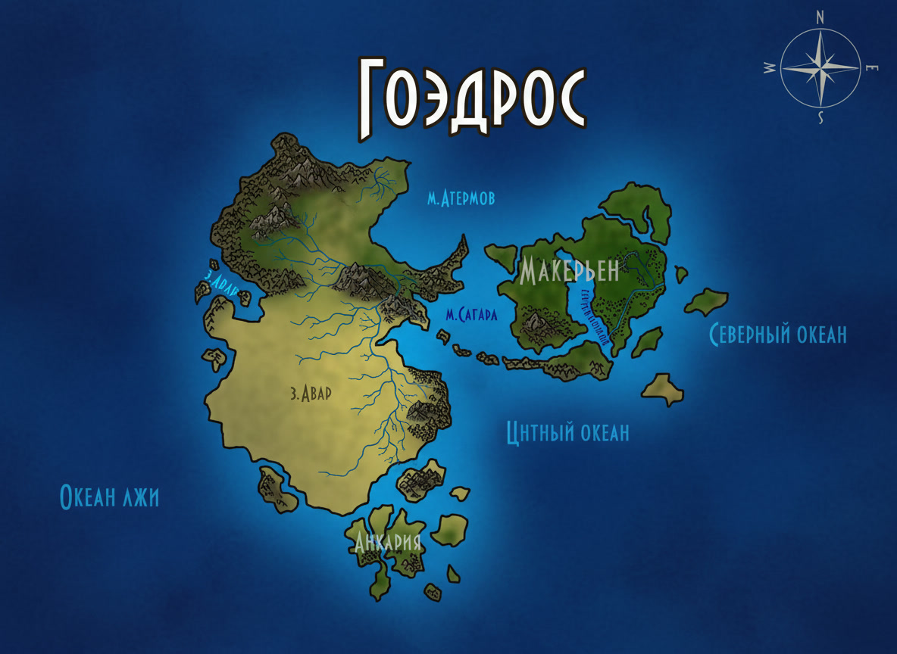

Гоэдрос
Гоэдрос — остров в прибрежных морских водах, чьи недра богаты рудами, а земля хранит следы древних конфликтов. Здесь живут три основных народа — тангары, варанеи и люди, — и отношения между ними далеки от безоблачных.
Карта Гоэдроса
Каменистые берега, рудные горы, подземные чертоги
images/goedros-map.jpgРекомендуемый размер:
1200 × 900 px (4:3)

Составлена по рассказам тангар, варанеев и людей. Там, где линии расходятся с камнем, — верьте камню.
География и климат
Гоэдрос лежит в прибрежных водах, отделённый от материка полосой холодных течений. Остров вытянут с севера на юг; его северные и южные берега скалисты и обрывисты, западное побережье более пологое и удобное для гаваней, а юго-восток изрезан глубокими оврагами и расщелинами. В центре острова раскинулось обширное плато, на котором стоит главный людской город-крепость.
Климат Гоэдроса суров: зимы долгие и ветреные, лето короткое и прохладное. С моря часто налетают шторма, а в горах снег лежит почти круглый год. Эта суровость закалила местные народы, но и наложила отпечаток на их быт: поселения жмутся к защищённым бухтам и подземным убежищам.
Водные ресурсы
Так как прибрежная вода является морской, она непригодна для питья, и потому в основном люди используют подземные источники и скважины с огромными запасами грунтовых вод — благо что рек подземных очень много, как и подземных озёр. С тангарами и варанеями дело обстоит так же. Существует теория о том, что где-то на острове есть артефакт, благодаря которому вода под землёй постоянно восполняется морской и очищается, становясь пригодной к питью. Однако правда это или нет — никто не знает.
Полезные ископаемые
На севере, юге и юго-западе, где живут тангары и варанеи, имеются крайне богатые — богаче, чем даже на Вареймане — разработанные залежи и рудники с металлами, а также каменным углём. Там найдётся очень многое: железо самых различных «сортов», вольфрам, медь, олово, адмантит (в редких экземплярах), мифрил, кобальт, молибден и многое другое. Только вот в последнее время добыча ископаемых идёт не так хорошо из-за того, что варанеи конфликтуют с главными добытчиками по различным причинам.
В центре острова имеются медь и иногда олово, изредка можно встретить залежи железа, которое там в основном добывается из воды в виде железного песка с небольшим содержанием молибдена.
Животные и растения
Сведения о животном и растительном мире Гоэдроса в источнике не раскрыты. Известно лишь, что природа острова своеобразна и тесно связана с его магическим прошлым: в лесах и на склонах гор встречаются существа, чьё происхождение связывают с древними битвами и следами магии. Местные охотники обходят некоторые ущелья стороной, а рыбаки не заходят в отдельные бухты — там, по преданиям, вода помнит слишком многое.
История острова
О прошлом Гоэдроса сохранилось немного сведений. Известно, что остров был заселён с древних времён и что недра его начали разрабатывать задолго до прихода людей. Тангары и варанеи — древние обитатели этих земель, а люди приплыли с небольших островов к югу от материка уже позже, потеснив коренное население и основав в центре острова свой город-крепость.
Раскол между наземными и подземными тангарами, по-видимому, тоже уходит корнями в глубокую древность — предания связывают его с некой катастрофой, заставившей часть народа уйти под землю. С тех пор поверхность и глубина живут в хрупком равновесии, и лишь крайняя нужда заставляет их искать друг у друга помощи.
Народы Гоэдроса
Тангары
Тангары — не слишком доверчивый, но отличающийся завидной (на фоне остальных обитателей острова) терпимостью к другим народам и дружелюбностью. Они, тем не менее, готовы стоять за себя, своих родных и близких, а также за свои королевства и сокровища до конца. Эта народность, наряду с варанеями и ранее тёмными эльфами, является частью коренного населения.
Их города-крепости — подземные и наземные — представляют собой величественные сооружения, защищающие почти от любых напастей. Однако между «наземниками» и «подземниками» существуют конфликты, как между двумя кланами одного народа: открытой вражды нет, но они недолюбливают друг друга. Подземники даже внешне отличаются от наземных — их кожа сера и бледна, а чёрные, полностью как два куска обсидиана, глаза не слишком привыкли к дневному свету. Наземники же обладают здоровым, светлым, розоватым цветом кожи и людскими глазами — и не понимают, как можно заточать себя под землю.
Тем не менее до открытых конфликтов никогда не доходит: именно наземники поставляют еду и блага цивилизации своим подземным собратьям, в то время как те защищают их от варанеев, ныне посягающих на королевства тангар.
Варанеи
Варанеи обитают преимущественно под землёй, хотя есть такие, что выбираются на поверхность и в основном разбойничают на юго-востоке острова. Практически все подземелья юго-востока Гоэдроса заняты ими. Главный вход в их подземные королевства — огромная гора, названная Камнем Злого Рока. Варанеи многочисленны и агрессивны по отношению почти ко всем другим расам.
Люди
Люди — достаточно сильно не любящие другие расы, приплывшие с небольших островков неподалёку от юга материка островитяне, коим необходимо сотрудничать с тангарами. Презрительно относятся к варанеям и неклюдам, из-за чего неклюды вынуждены жить за чертой огромного города-крепости в сотню тысяч человек населением (людей не так много по сравнению с варанеями и тангарами), в общинах, или вовсе скитаться по острову. Расположен город людей в центре острова и занимает он практически всю «золотую середину».
Неклюды
Неклюды — народ, вынужденный жить за чертой человеческого города-крепости, в общинах, или скитаться по острову. Люди относятся к ним презрительно, как и к варанеям.
Политическое устройство
Единой власти над Гоэдросом нет. Тангары живут королевствами — каждое со своим правителем, и наземные с подземными связаны скорее обычаем и нуждой, чем законом. Люди управляются советом города-крепости, чьё слово решает вопросы торговли и обороны. Варанеи не признают над собой ничьей воли и живут кланами, подчиняясь лишь силе и древним обычаям подземелий. Неклюды же держатся своими общинами, вне большой политики.
Экономика и торговля
Основа богатства Гоэдроса — рудники. Тангары и варанеи веками добывают здесь металл, каменный уголь и редкие руды, которые затем расходятся по всему Мериону. Город-крепость людей в центре острова стал главным торговым узлом: сюда стекаются караваны с севера и юга, а через западный порт идут корабли к Варейману и другим материкам. Неклюды, лишённые собственных земель, часто промышляют ремеслом, охотой и мелкой торговлей, а некоторые — и разбоем, на что их толкает нужда.
Достопримечательности и особенности
Город-крепость людей
В центре острова расположен огромный город-крепость, населённый практически полностью лишь людьми. Поражающий своими размерами, он стал главным торговым центром острова и протягивается до берегов на западе. Здесь есть всё — храмы, торговые лавки, дома, трактиры и порт. Город процветает в основном благодаря торговле с тангарами и другими материками, в частности с Варейманом.
Камень Злого Рока
Второй достопримечательностью острова является Камень Злого Рока — поистине огромная гора, служащая одновременно вместилищем некоего безумного мага и входом в подземелья варанеев. Возвышающаяся над всем, она поражает своими размерами, и многие путешественники плывут на Гоэдрос, чтобы лицезреть это.
Легенды и тайны
Гоэдрос окутан слухами. Говорят, где-то в его глубинах бьёт источник, очищающий морскую воду, — быть может, тот самый артефакт, о котором спорят мудрецы. Говорят также, что безумный маг, обитающий в Камне Злого Рока, некогда был великим чародеем, чьё безумие изменило сам остров. Иные утверждают, что в древности здесь произошла битва, отголоски которой до сих пор слышны в подземельях. Доподлинно известно лишь одно: Гоэдрос не любит чужаков, приходящих с пустыми руками, и щедро одаряет тех, кто умеет слушать его камни.
География Мериона · Остров Гоэдрос